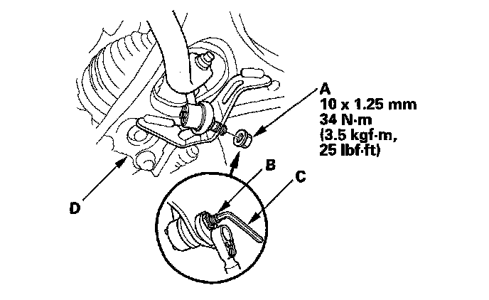
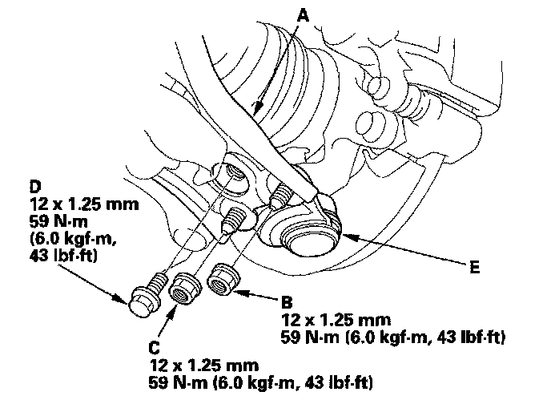
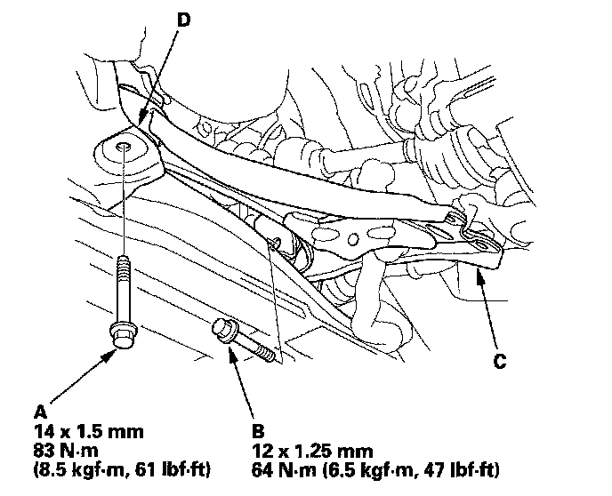
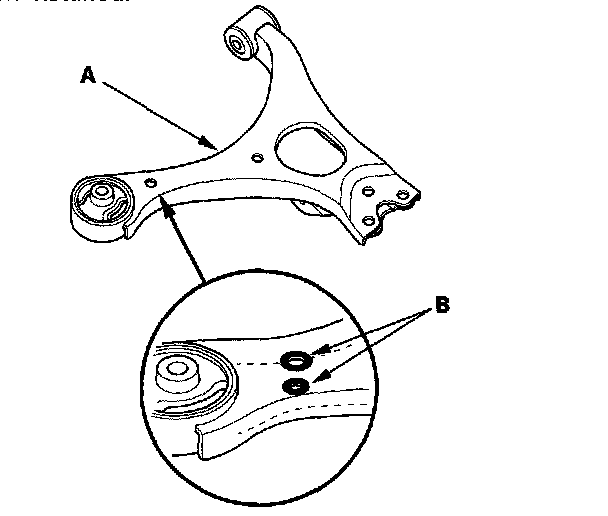
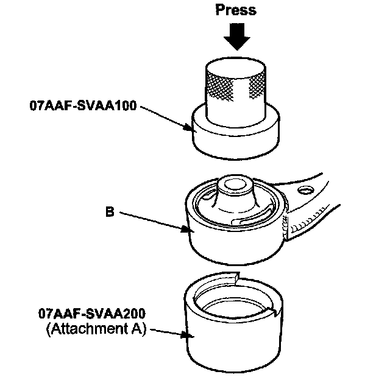
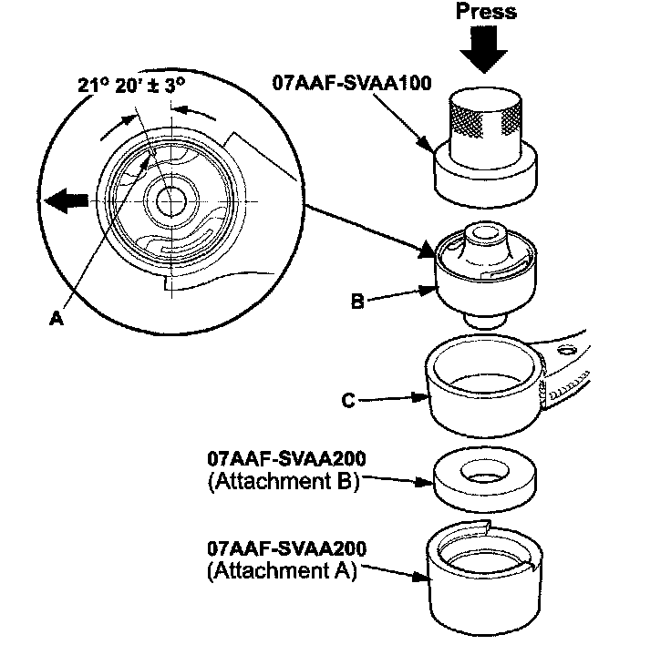
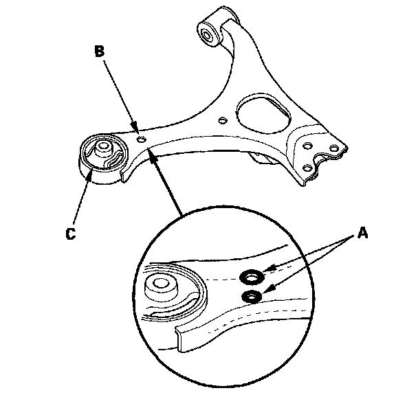

Front Suspension
Lower Arm Removal/InstallationSpecial Tools Required
^ Bushing driver 07AAF-SVAA100
^ Receiver set 07AAF-SVAA200
Removal/Installation
1. Raise the front of the vehicle, and support it with safety stands in the proper locations.
2. Remove the center cap and front wheel.
3. Remove the flange nut (A) while holding the respective joint pin (B) with a hex wrench (C), then disconnect the stabilizer links from the lower arm (D).
NOTE: Use a new flange nut during reassembly.

4. Turn the stabilizer bar backward to gain easier access to the front side of the lower arm mounting bolt.
5. Remove the flange bolt and flange nuts from the lower arm (A).
NOTE: During installation, install a new flange bolt and new flange nuts. After lightly tightening all three fasteners, tighten them to the specified torque in the following order; the nut on the front (B), the nut on the rear (C), then the bolt (D).

6. Disconnect the lower ball joint (E) from the lower arm.
7. Remove the lower arm mounting bolt (A).
NOTE: During installation, install a new mounting bolt.

8. Remove the lower arm mounting bolt (B), then remove the lower arm (C) from the front suspension subframe (D).
NOTE: During installation, install a new mounting bolt.
9. Install the lower arm in the reverse order of removal, and note these items:
^ First install all the components, and lightly tighten the bolts and nuts, then tighten the lower ball joint to the lower arm to the specified torque. Raise the suspension the lower ball joint to the knuckle and the lower arm to the subframe to load it with the vehicle's weight before fully tightening to the specified torque.
^ Tighten all mounting hardware to the specified torque values.
^ Before installing the wheel, clean the mating surface of the brake disc and the inside of the wheel.
^ Check the wheel alignment, and adjust it if necessary.
Bushing Replacement
NOTE: Replace the lower arm (A) as an assembly if the lower arm has the paint mark (B) around the hole near the front bushing. The paint mark can also be seen around a hole on the bottom side of the lower arm in the same area. Paint marks indicate a oversize bushing has been installed.

1. Press out the bushing (A) with the bushing driver, receiver set (attachment A) and a hydraulic press, and remove the bushing from the lower arm (B).
NOTE: Be careful not to damage the inside of the bushing hole when pressing on the bushing.

2. Clean the mating surface of the new bushing and the lower arm.
3. Position the tab (A) of the bushing (B) with the lower arm (C) as shown.

4. Using a hydraulic press, bushing driver, and receiver set attachments, press in the bushing into the lower arm.
5. Using a yellow oil-based paint marker, paint a mark (A) around the hole (B) near the front bushing (C). Also paint a mark around the hole on the bottom side of the lower arm in the same area.
NOTE: These marks are used to identify a lower control arm that has had the bushing replaced. Do not replace the bushing in a lower arm with there paint marks; you must replace the lower arm.
